Outdoor lighting design ran on scarce expertise: IES photometric files, uniformity ratios, optic taxonomies, and site models that took days to build. Every parking lot, sports field, and warehouse queued behind a small pool of specialists.
Light ARchitect turned that craft into a product: draw a boundary on live satellite imagery, let AI propose fixture layouts, check the numbers against real photometry, and walk away with a spec-ready design. Free, in the browser, and on the jobsite in AR.
No abstract CAD plane. You search an address, the site appears in satellite view, and everything you draw — boundaries, poles, wall packs, measurements — lives at real-world scale on the real property.
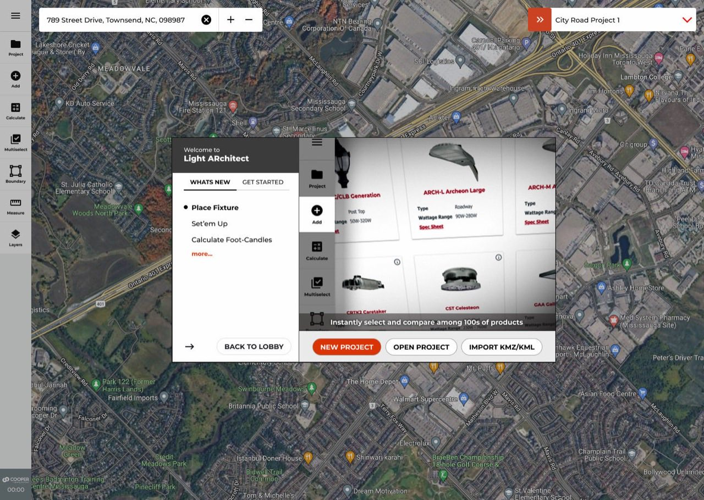
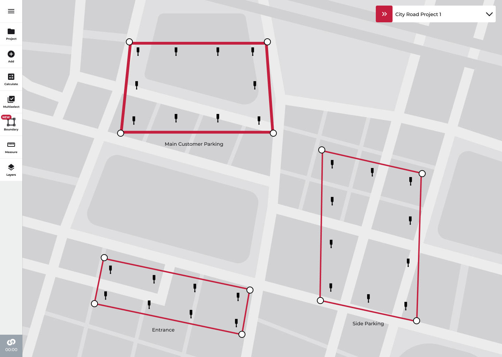
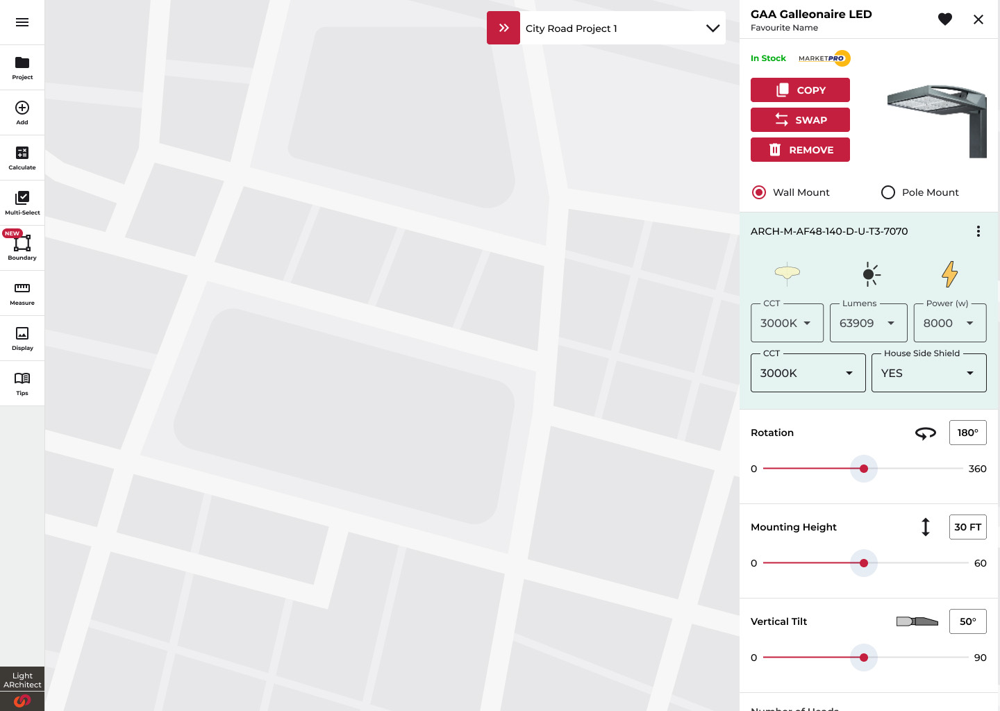
Simplifying the workflow never meant softening the math. Every design computes from real IES photometry: average, max, min, and both uniformity ratios per stat area, with a PDF the spec reviewer will accept.
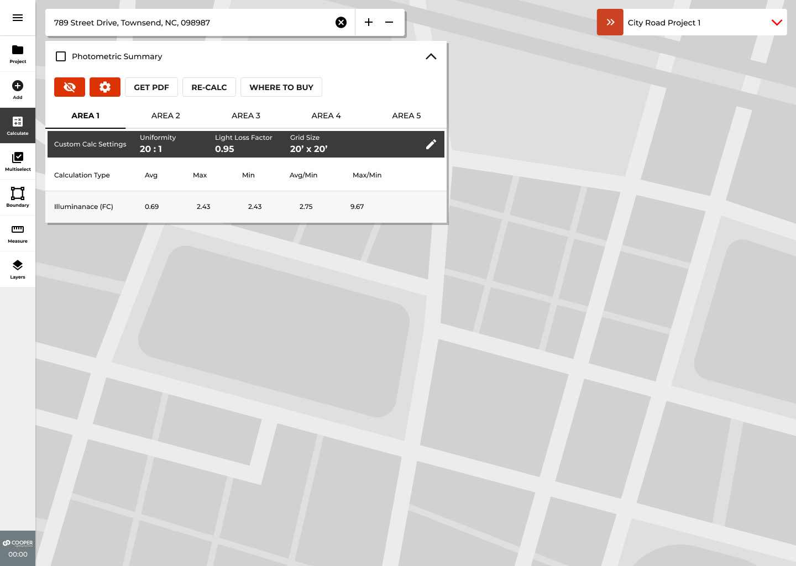
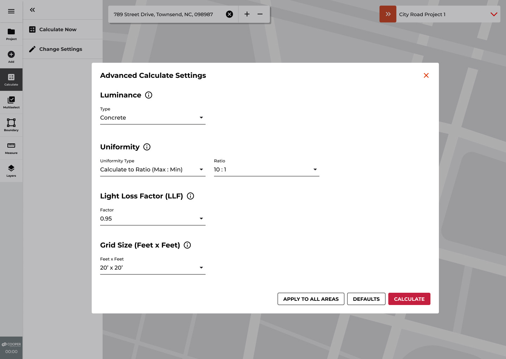
Experts don't browse catalogs — they eliminate. The library never renders unfiltered: pick CCT, lumen band, wattage, and optic first, and the 5,000-file curated set collapses to the handful that fit.
Curated is the operative word: distilled from a manufacturer catalog of 250,000+ photometric files down to the set a real design actually chooses from.
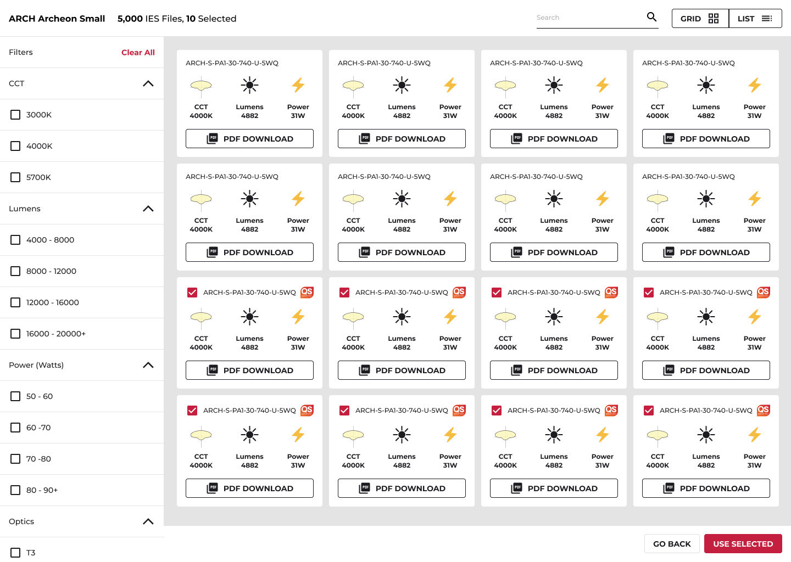
Baseball, softball, football, soccer, tennis: pre-engineered pole counts, mounting heights, and foot-candle classes, dropped as a template and aligned over the real field. The interaction model behind this is one of the three patents.
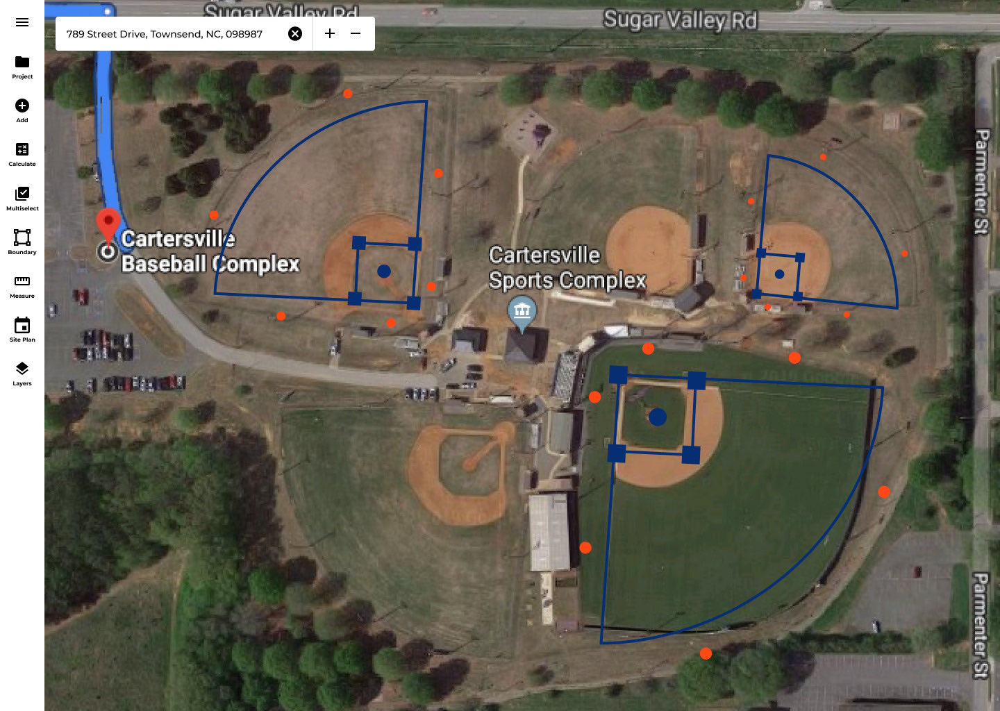
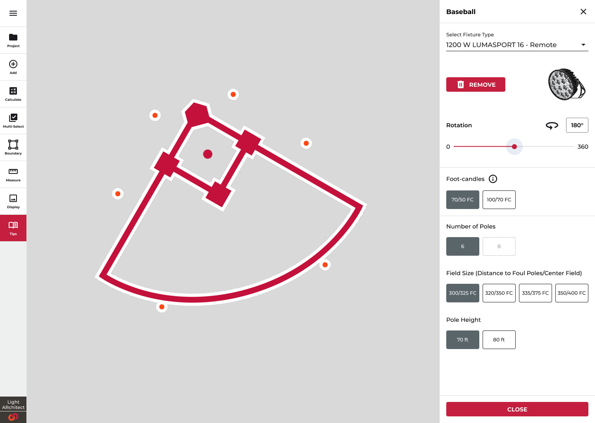
The product began as one of commercial lighting's first AR applications: stand on the site, place a virtual fixture, and see the luminaire — and its light — in context. That camera-first DNA still runs through the platform's photo mode.
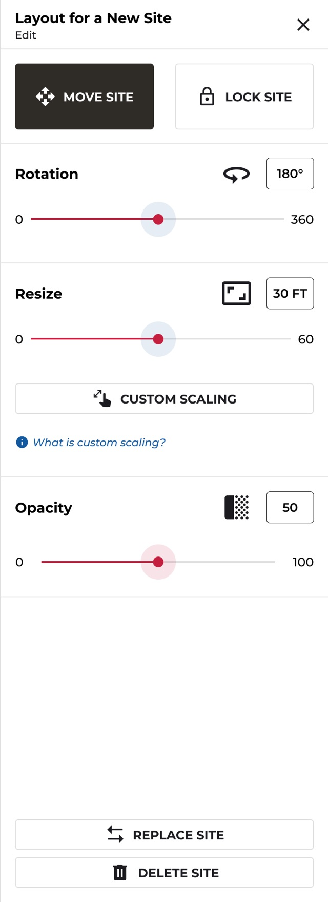
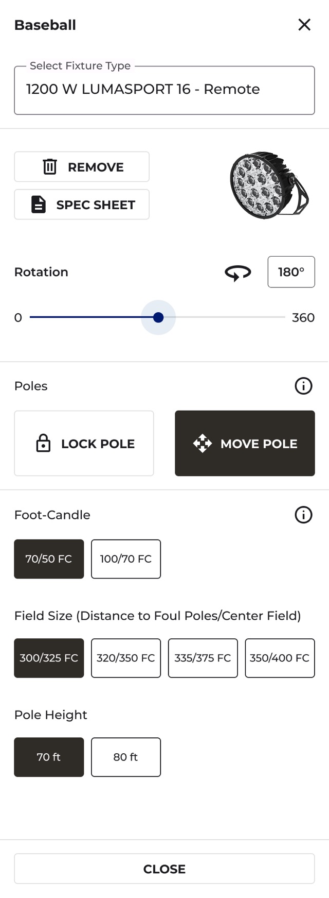
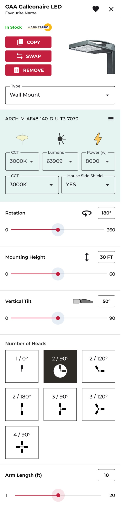
The job was never to hide the photometrics. It was to make them navigable — for the contractor and the specialist in the same interface.
Three of the product's core interaction models were novel enough to file. Co-inventor on all three; assigned to Signify.
The IES library and the layout intelligence didn't stay in one app. They became Fixture Recommendation and Smart Layout inside CORE, Cooper's cloud platform — AI that reaches the sales desk and the spec sheet.
That chapter is its own case study: Enterprise AI.
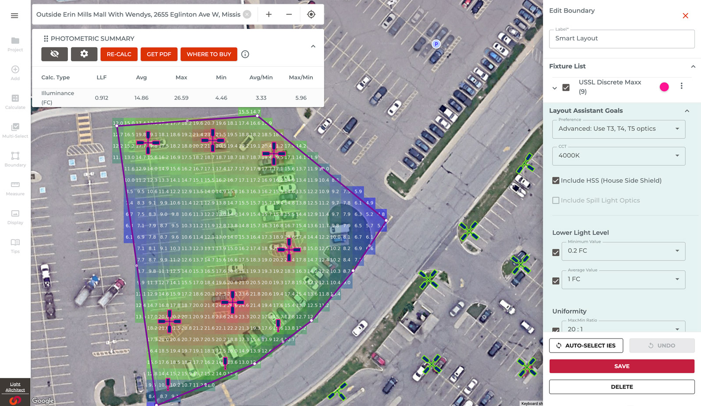
Light ARchitect is where the thesis formed: the system computes, ranks, and explains — the professional keeps the call. Spatial trust on real imagery, progressive disclosure for mixed expertise, and a human-AI feedback loop that respects the standard. The same spine now runs through the defence and security work.